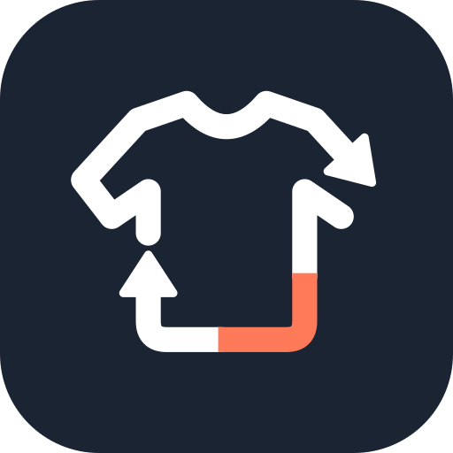

Combinations built from what you own, scored on color, dress level and how recently each piece was worn. Tap a piece to swap it.
Everything you own that is still in rotation. Tap an item to edit it.
Items flagged by condition, wear and age. Nothing is removed until you confirm it.
What is missing for each kind of day, and which colors would add the most outfits with what you already have.